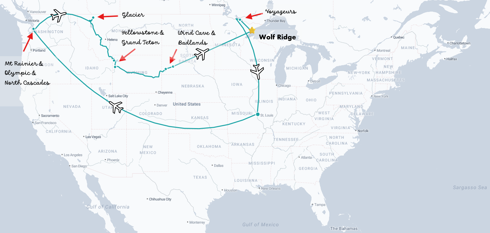
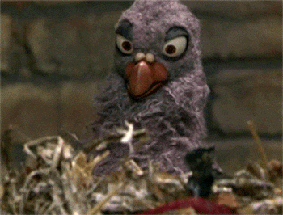

For the past few years, I saw the email come into my inbox calling applicants for the Newman Exploration Travel Fund (NEXT) supported by WashU Libraries, pondered what I would ever submit, and deleted the email. A few months later, I would envy the winners and admire their travels. This year, however, I pondered a little longer and a few days before the deadline, I whipped up this proposal.
A few weeks later, I received this email:
Dear Jayde,
Congratulations!
Your application has been selected to receive funding as part of the Newman Exploration Travel Fund program for your proposed trip to various U.S. National Parks in Montana, Wyoming, South Dakota and Minnesota. We have decided to fund your proposal … We are so excited to support your NEXT adventure.
Then on April 1 (but not even a joke), the announcement was made.
The trip
I am in full-planning mode now and eager to start my trip in less than a month! I’ll be using this website to post my updates, discoveries, and photos. Here’s the rough timeline and a bonus map showcasing my stellar photoshop skills.

First up: WASHINGTON
In early June, I’ll arrive in Seattle, where I’ll be picked up by my college roommate turned bff, Sarah. Sarah is a super cool gal serving as a XXX in the Navy. From there, we’ll head to Mt. Rainier National Park to kickoff my journey. After Mt. Rainier, we’ll return to her home on Whidbey Island to rest and prepare to run the North Olympic Discovery Marathon on June 8. This will be my first (and maybe only) marathon! I’ve been training for months and somehow nearly all of my long Saturday runs have been in the pouring rain; I’m ready to take on a PNW marathon. The trail will be gorgeous and I’ve been promised seal and eagle sightings.
Okay, back to the real purpose of this trip.
After my marathon and some adequate rest (did I mention I’m running a marathon?), I’ll make my way to North Cascades to finish up my Washington National Parks.
America the Beautiful
After landing in Montana, I’ll head to Glacier National Park, followed by quick trips to Wyoming (Yellowstone and Grand Teton) and South Dakota (Wind Cave and Badlands). I’ve never been to any of those states and am excited to take in the Intermountain and Midwestern regions.
Wolf Ridge
To round out the trip, and the portion I may be most excited for, I’ll head to northern Minnesota to attend a weeklong workshop for Beginning Bird Banding. I will learn skills like mist-netting, bird-handling, and data recording protocols needed to contribute to monitoring and research efforts requiring bird banding. I’m excited to learn, spend time in nature with my favorite critters, and befriend fellow bird nerds.
After the workshop, I will explore Voyageurs National Park and then head back to St. Louis and my regularly scheduled programming.
Stay tuned!
I will be using this blog to record my adventures and reflect on my journey. Please follow along!
